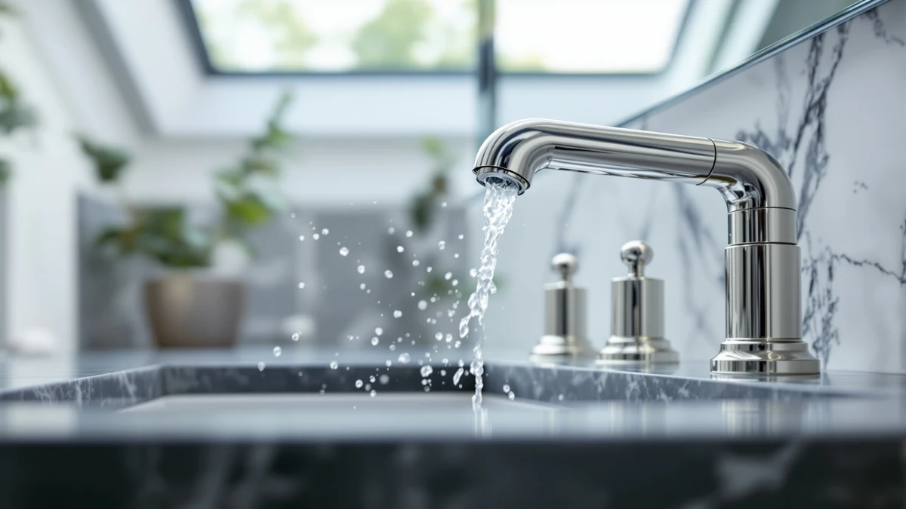

How to Install New Bathroom Faucets: Complete Guide (2026)
Prices and picks verified as of October 2026. Independent, reader-supported reviews.


Things to Know Before You Buy
- Shutting off the water comes first. Most sinks have their own shutoff valves underneath; if yours don't, you'll need to shut off the main water supply to the house.
- Most new faucets fit standard sink holes. Single-handle faucets need one hole, widespread sets need three spread apart, so measure your existing holes before you buy.
- A basin wrench makes the job much easier. The mounting nuts sit in a tight space under the sink, and a standard wrench often can't reach them.
- Budget about $15 for consumables. Plumber's tape, silicone caulk, and sometimes new supply lines are the main extra costs beyond the faucet itself.
Knowing how to install new bathroom faucets saves you a plumber's call and the hour you'd spend waiting for one to show up. Most swaps take less than two hours once the old fixture is out, and the process is nearly identical whether you're installing a single-handle faucet, a widespread set, or a touchless model with a sensor box under the sink.
This guide breaks the job into five stages, from shutting off the water to testing the new faucet for leaks. We researched manufacturer installation instructions and compared the hardware that ships with popular faucets so you know what to expect before you start. Set aside an afternoon, keep a bucket nearby for the water still sitting in the lines, and work through each step in order rather than skipping ahead.
What You'll Need
- Supplies: plumber's tape, silicone caulk, replacement supply lines
- Tools: basin wrench, adjustable wrench or slip-joint pliers, bucket and towels
Step 1: Shut off the water and clear the lines
Look under the sink for two small valves, one for hot and one for cold, and turn each one clockwise until it stops. If your sink doesn't have its own shutoff valves, you'll need to turn off the main water supply to the house at the meter or the main valve, which is usually in a basement, crawl space, or utility closet.
Once the water is off, turn the faucet handles to the open position to release the pressure and drain whatever water is still sitting in the supply lines. Put a bucket or an old towel under the connections before you disconnect anything, because a cup or two of water usually drips out even after the lines are drained.
Check that the water is actually off by turning on the faucet again. If nothing comes out, you're ready to move on. If water still trickles through, trace the shutoff valves again. The rest of this how-to install new bathroom faucets process goes faster when you're not also mopping up a leak.
Step 2: Remove the old faucet
Use an adjustable wrench to loosen the coupling nuts that connect the supply lines to the old faucet's tailpieces, working at the connection point under the sink rather than up near the faucet body. Have a bucket ready since a little water almost always remains in the lines.
With the supply lines free, locate the mounting nuts that hold the faucet to the sink or countertop. These sit deep under the basin and are usually the hardest part to reach, which is where a basin wrench earns its keep: its long shaft and pivoting head let you grip a nut you can't see or reach with your hand.
Once the mounting nuts are off, lift the old faucet out from above. If it's been in place for years, the base may be stuck to the sink with old caulk or mineral buildup. A putty knife run carefully around the edge usually breaks it free. Scrape off the old caulk and wipe the area down so the new faucet sits on a clean, flat surface.
Step 3: Set the new faucet in place
Check the hole configuration on your sink against the new faucet before you start. A single-handle faucet needs one hole, a centerset needs three closely spaced holes, and a widespread set needs three holes spread further apart. Dry-fit the faucet in the holes first to confirm everything lines up.
Run a thin bead of silicone caulk around the base of the faucet, or along the underside of its deck plate if it uses one, then lower the tailpieces through the sink holes from above. Working underneath the sink, thread the mounting nuts and washers onto the tailpieces by hand first, then snug them down with the basin wrench. Tighten evenly on both sides so the faucet sits flat and doesn't twist as you work.
Wrap the threads on any hose or valve connections with plumber's tape before you tighten them, wound clockwise so it doesn't unravel as you thread the next piece on. This small step prevents most of the slow leaks that show up a few days after an install.
Step 4: Connect the supply lines and drain
Connect the supply lines to the faucet's tailpieces, matching hot to hot and cold to cold. Most new faucets come with flexible braided lines already attached; if yours don't, or if the old lines are cracked or corroded, install new ones rather than reusing ones that are already showing wear.
Hand-tighten each coupling nut, then give it a final quarter turn with the adjustable wrench. Snug is enough. Overtightening can crack the plastic fittings that many supply lines use at the faucet end, which turns a simple install into a return trip to the hardware store.
If your faucet includes a pop-up drain assembly, reconnect the linkage that runs from the lift rod behind the faucet down to the drain stopper, then adjust the clevis strap so the stopper opens and closes fully with the rod. If you're reusing your existing drain, you likely only need to reattach it to the new faucet's tailpiece.
Step 5: Test for leaks and secure everything
Turn the shutoff valves back on slowly, one at a time, and watch the connections underneath the sink as the lines pressurize. Keep a flashlight and a dry paper towel handy. Wrapping a paper towel around a joint for a few seconds shows a slow drip faster than your eyes will catch one in dim light under a cabinet.
Run the faucet on hot and cold for a minute each, then check the connections again once the lines have been under full pressure for a few minutes. A fitting that looked fine when you first turned the water on can still seep slightly once it's been pressurized for a while.
If you find a drip, shut the water off again, tighten the connection another quarter turn, and recheck. A connection that still leaks after that usually needs fresh plumber's tape rather than more force. Once everything stays dry, wipe down the caulk line at the base of the faucet with a damp finger for a clean seal and let it cure before you use the sink normally.
Common Mistakes to Avoid
The most common mistake is skipping the shutoff check and assuming the valves under the sink actually stop the water. Older shutoff valves corrode internally and can look closed while still letting water through, so always confirm by opening the faucet before you disconnect anything. If water still drips after you've shut the valves, trace the issue back to the main supply rather than fighting a stuck valve.
Overtightening connections is another frequent problem. Supply line nuts and faucet tailpieces are often brass over plastic threads, and forcing a wrench past snug can crack a fitting you won't notice until the water's back on and dripping onto the cabinet floor below. Hand-tight plus a quarter turn with a wrench is almost always enough.
Skipping the dry-fit before applying caulk causes headaches too. If you caulk the base first and then discover the holes don't line up the way you expected, you're scraping out fresh sealant and starting over. Fit the faucet dry, confirm it sits flush and square, and only then run the caulk bead.
Finally, some people reuse old, brittle supply lines to save a few dollars. Rubber supply lines harden and crack over years of hot and cold cycling, and a line that looks fine on the shelf can fail within months of being flexed during an install. If the old lines are more than five years old, replace them while the cabinet is already open and you have the right tools in hand for installing new bathroom faucets.
Our Top Picks
If you're shopping for the faucet itself before you start this project, these three options cover the most common installs: a standard pull-down model, a touchless sensor faucet, and a budget-friendly waterfall design.

Editor’s Pick
Pull-Down Bathroom Faucet 3 Hole
A straightforward three-hole, single-handle faucet with a pull-down sprayer, a practical fit for most standard sink installs.
$41.49
Check Price on Amazon
Best Value
Greenspring Touchless Bathroom Faucet Sensor
A sensor-activated, hands-free faucet worth considering if you want to cut down on handle contact at the sink.
$48.99
Check Price on Amazon
Premium Choice
Fransiton Waterfall Single Handle Bathroom
A single-handle waterfall-style faucet with a wide, flat spout, a style upgrade that installs the same way as a standard single-hole model.
$24.29
Check Price on AmazonDo I need to turn off the main water supply to install a new bathroom faucet?
Usually not.
How long does it take to install new bathroom faucets?
Budget around 1 hour and 30 minutes for a straightforward swap where the new faucet matches your existing hole configuration.
Frequently Asked Questions
Do I need to turn off the main water supply to install a new bathroom faucet?
How long does it take to install new bathroom faucets?
Can I install a new bathroom faucet myself without hiring a plumber?
What size wrench do I need to install a bathroom faucet?
Why does my new bathroom faucet still leak after installation?
Verdict
Installing a new bathroom faucet is a manageable afternoon project once you break it into the five steps covered here: shutting off the water, removing the old fixture, setting the new one in place, connecting the supply lines, and testing for leaks. The sequence matters more than the specific faucet you choose, since shutting off a valve wrong or skipping the dry-fit step causes more problems than any individual product does.
If you're also shopping for the faucet itself while you plan the install, a three-hole, single-handle model like the BDJM Pull-Down Bathroom Faucet covers the most common sink configuration without adding extra steps to the process described above. Whatever faucet you pick, the core process for how to install new bathroom faucets stays the same: water off, old faucet out, new faucet set and sealed, lines connected, and a careful check for leaks before you call the job finished. Keep a wrench and some plumber's tape on hand, and most installs wrap up well within two hours.